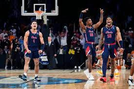

FDU Upset
Fairleigh Dickinson became the second No. 16 seed in history to win an NCAA Tournament game, stunning top-seeded Purdue 63-58 behind 19 points from Sean Moore and a relentless, hustling defense. The shortest team in the tourney, the Knights (21-15) showed no fear in swarming 7-foot-4 All-America center Zach Edey from the start. FDU's players were quicker and more composed than the Big Ten champion Boilermakers (29-6). Five years ago, UMBC showed the way for the little guys by overwhelming Virginia in the first 16-over-1 victory after numerous close calls over the years. Still, No. 16s had a 1-150 record before FDU's shocker.

FAU Run
FAU is certainly under-seeded as a No. 9 seed despite being the 17th-ranked team in KenPom rankings and the 33rd-ranked team in the Committee’s total seed list. They decisively beat Tennessee in the Sweet 16 and went toe-to-toe with Kansas State in the Elite 8, digging out of a seven-point deficit midway through the second half and overcoming 22 turnovers. The key to the win was Vlad Goldin, the 7’1” big man who was a force inside with a game-high 14 rebounds and two blocks. FAU, a team that got bounced from last year’s CBI in the first round, is heading to Houston. The Owls have broken through in a big way, and the run indeed does not end here.
- #16 FDU Eliminated
- #9 FAU Final 4
- Live Bracket
- How to Watch